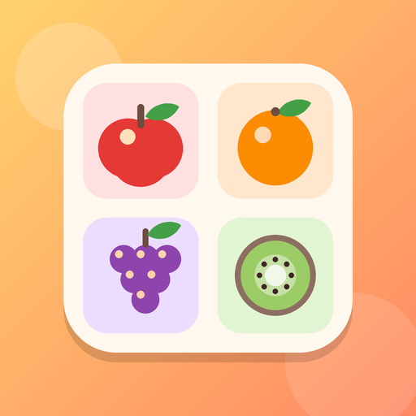
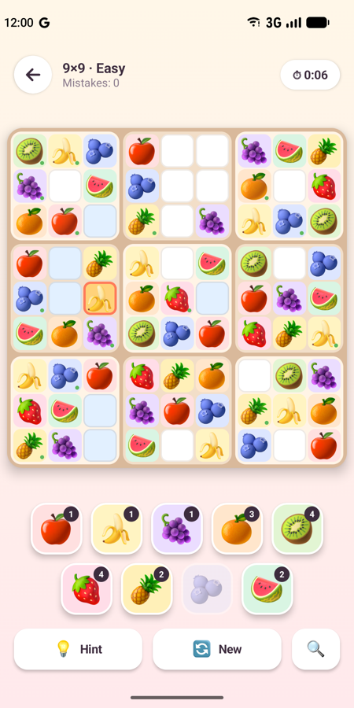
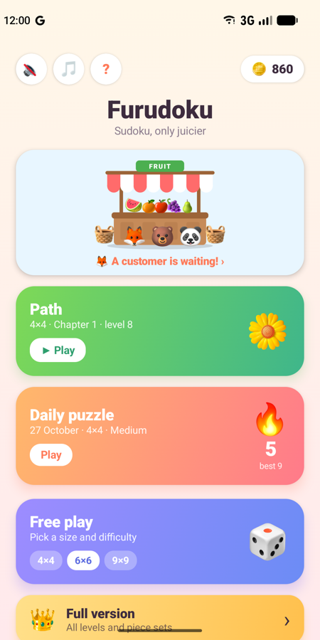
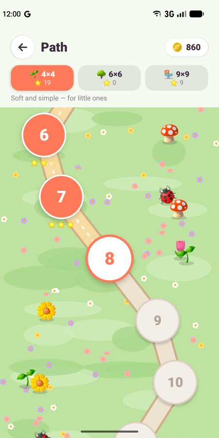
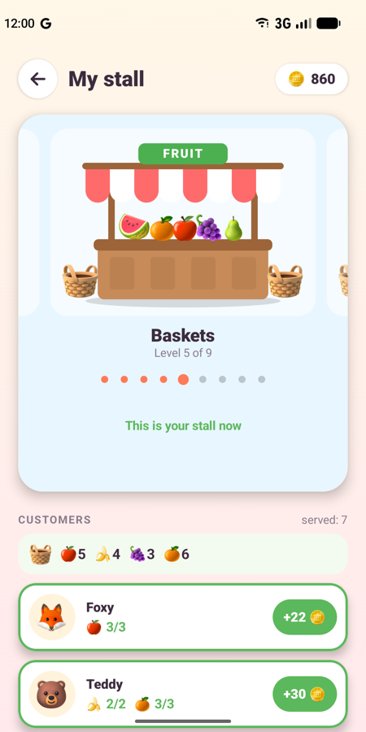
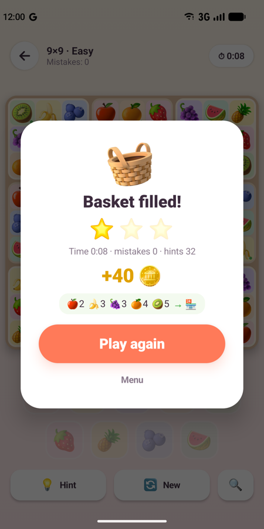
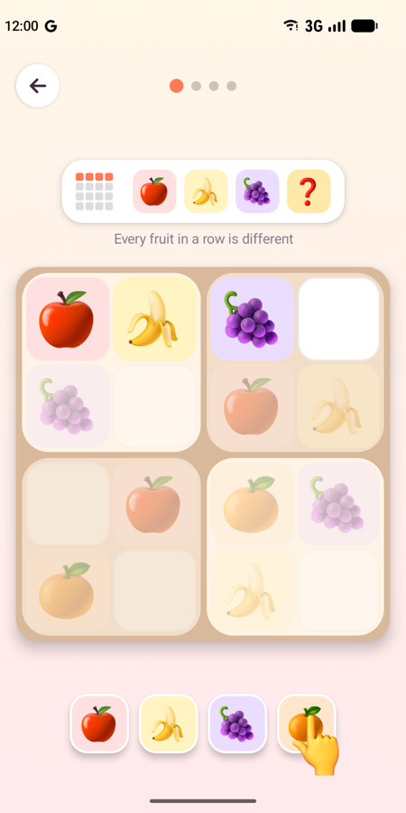

Furudoku
Sudoku with fruit instead of numbers. Easy for kids, fun for the whole family.
For Android 8 and up. The iPhone version is on its way.
Screenshots






What’s inside
🍎 Learn without wordsA picture tutorial with a pointing hand — no reading needed.
🌱 Three endless paths4×4 for little ones, 6×6 for growing puzzlers, 9×9 real sudoku.
🏪 Grow a fruit stallServe animal customers and turn a crate into a market stand.
📅 Daily puzzleA new puzzle every day — keep your streak going.
🎨 Fruit or digitsPlay with fruit or classic numbers, or unlock more piece sets.
👪 Made for familiesNo ads, no accounts, no personal data. Works offline.